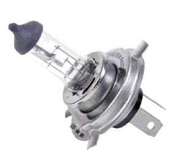

Vauxhall Astra 2008 (08) 1.6; 1598CC DOHC 16V TURB - 63

Ignition Coil:
An ignition coil (also called a spark coil) is an induction coil in an automobile's ignition system which transforms the battery's low voltage to the thousands of volts needed to create an electric spark in the spark plugs to ignite the fuel. Some coils have an internal resistor while others rely on a resistor wire or an external resistor to limit the current flowing into the coil from the car's 12 volt supply. The wire that goes from the ignition coil to the distributor and the high voltage wires that go from the distributor
Price: £ 130
Part Number: 413720320
Manufacturer: Delphi
Spark Plugs:
A spark plug is a device for delivering electric current from an ignition system to the combustion chamber of a spark-ignition engine to ignite the compressed fuel/air mixture by an electric spark, while containing combustion pressure within the engine. A spark plug has a metal threaded shell, electrically isolated from a central electrode by a porcelain insulator. The central electrode, which may contain a The spark plug's metal shell is screwed into the engine's cylinder head and thus electrically grounded. The central electrode protrudes through the porcelain insulator into the combustion chamber, forming one or more spark gaps between the inner end of the central electrode and usually one or more protuberances or structures attached to the inner end of the threaded shell and designated the "side", "earth", or "ground" electrode(s).
Price: £ 4
Part Number: MK5 (04-10)
Manufacturer: Bosch

Fan Belts:
A fan belt, often called a drive belt, is an essential engine component in most vehicles. Fan belt failure can lead to decreased performance or complete stalling. It connects the engine cooling fan to the alternator and crankshaft pulley. Belts are also used to power components such as the air conditioner compressor, the power steering pump and the water pump.
Price: £ 64.94
Part
Manufacturer: Gates
Oxygen Sensor:
Automotive Engine sensors, colloquially known as O2 sensors, make modern electronic fuel injection and emission control possible. They help determine, in real time, if the air–fuel ratio of a combustion engine is rich or lean. Since oxygen sensors are located in the exhaust stream, they do not directly measure with information from other sources, it can be used to indirectly determine the air-fuel ratio.
Price: £ 52.25
Part Number: OZA334-SZ4
Manufacturer: NGK / NTK
Headlight Bulbs:
Bulbs the road you are travelling along they also allow you to warn other road users of your intention to turn or
Price: £ 7
Part Number: 481770228
Manufacturer: Bosch
